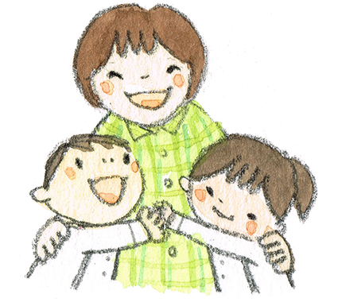
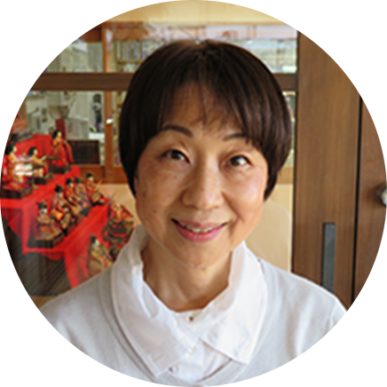
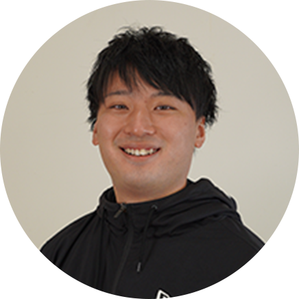
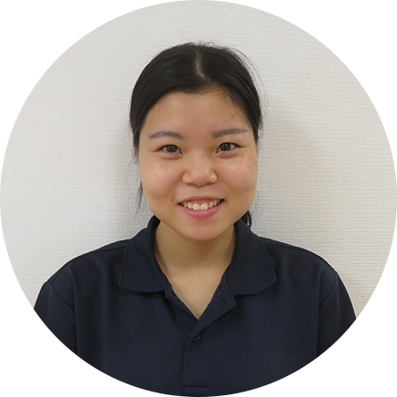

聖三一幼稚園を
守っています
理事長先生

幼稚園の
みんなのお母さん
園長先生
神様のこと
みんなに伝えます
大岡先生
ピアノを弾くのが
大好き
まりえ先生
光る泥団子
作り名人
えりこ先生
おいしいパン屋さん
にも変身
なおと先生
動画撮影は
プロ級の腕前
ともよ先生

ギターが
とっても上手
つよし先生
楽しいことは
何でもおまかせ
わかな先生
子どもにも先生
にも気配り上手
ももか先生

元気いっぱい
遊ぶの大好き
みき先生
絵本が
とっても大好き
なおこ先生
ゆったり優しい
つくし組は任せてね
ゆみ先生
どのクラスの
サポートもバッチリ
たかこ先生
ほんわか笑顔が
チャームポイント
いづみ先生
小物づくりが
とっても得意
やすこ先生
一人ひとりを
大切にみます
あすか先生
いつもニコニコ
表情豊か
みわこ先生
アンテナはって
気づきの名人
みねこ先生
リトミックの
スペシャリスト
かめだ先生
園のあちこちで
大活躍
なつみ先生
どんなことも
丁寧にします
ともちゃん先生
朝つくしで
元気に保育
ともこ先生
優しい声で子ども
たちとすぐに仲良し
みさ先生
なんでもお任せ
縁の下の力持ち
つねだ先生
心を込めておいしい
給食を作ります
みさと先生
食で子どもたちを
サポートします
めぐみ先生
ピカピカ環境整備
のエキスパート
いずみ先生
子ども達と走り回る
さすがは体育の先生
ひろあき先生